# A tibble: 234 × 11
manufacturer model displ year cyl trans drv cty hwy fl class
<chr> <chr> <dbl> <int> <int> <chr> <chr> <int> <int> <chr> <chr>
1 audi a4 1.8 1999 4 auto… f 18 29 p comp…
2 audi a4 1.8 1999 4 manu… f 21 29 p comp…
3 audi a4 2 2008 4 manu… f 20 31 p comp…
4 audi a4 2 2008 4 auto… f 21 30 p comp…
5 audi a4 2.8 1999 6 auto… f 16 26 p comp…
6 audi a4 2.8 1999 6 manu… f 18 26 p comp…
7 audi a4 3.1 2008 6 auto… f 18 27 p comp…
8 audi a4 quattro 1.8 1999 4 manu… 4 18 26 p comp…
9 audi a4 quattro 1.8 1999 4 auto… 4 16 25 p comp…
10 audi a4 quattro 2 2008 4 manu… 4 20 28 p comp…
# ℹ 224 more rows資料分析
第二章：第一步
劉昱佑
實踐大學
2026-06-06
簡介
簡介
本章的目標是教你如何盡快用 ggplot2 產生有用的圖形。你將學會 ggplot() 的基礎，以及一些用來製作最重要圖形的實用「食譜」。ggplot() 讓你只用幾行程式碼就能製作出複雜的圖形，因為它建立在一套豐富的底層理論——圖形文法——之上。在這裡我們會跳過理論、專注於實作，而在後續章節中你將學會如何運用這套文法完整的表達能力。
在本章中你將學到：
關於
ggplot2內附的mpg資料集，第 2.2 節。每張圖都有的三個關鍵元件：資料、美學與 geoms，第 2.3 節。
如何利用美學為圖加入額外的變數，第 2.4 節。
如何運用分面（faceting）所建立的小倍數圖，在圖中顯示額外的類別變數，第 2.5 節。
各種你可以用來製作不同類型圖形的 geoms，第 2.6 節。
如何修改座標軸，第 2.7 節。
除了顯示圖形物件之外你還能對它做的事，例如把它存到磁碟，第 2.8 節。
燃油經濟性資料
燃油經濟性資料
在本章中，我們大多使用一個與 ggplot2 一起附帶的資料集：mpg。它包含 1999 年與 2008 年熱門車款的燃油經濟性資訊，由美國環境保護署收集，http://fueleconomy.gov。你可以透過載入 ggplot2 來存取這份資料：
mpg 中的變數
這些變數大多不言自明：
cty與hwy分別記錄市區與高速公路駕駛的每加侖英里數（mpg）。displ是引擎排氣量，單位為公升。drv是驅動系統：前輪（f）、後輪（r）或四輪（4）。model是車款名稱。共有 38 個車款，之所以選入是因為它們在 1999 到 2008 年間每年都推出新版。class是描述車輛「類型」的類別變數：雙座車、SUV、緊湊型等等。
這份資料集引出了許多有趣的問題。引擎大小與燃油經濟性如何相關？某些製造商是否比其他製造商更在意燃油經濟性？過去十年間燃油經濟性是否有所改善？我們將試著回答其中一些問題，並在過程中學會如何用 ggplot2 製作一些基本的圖形。
練習
列出五個你可以用來取得 mpg 資料集更多資訊的函式。
你要如何找出
ggplot2還附帶了哪些其他資料集？除了美國以外，大多數國家使用的是燃油消耗量（固定距離所消耗的燃油），而非燃油經濟性（固定油量所行駛的距離）。你要如何把 cty 與 hwy 換算成歐洲標準的 l/100km？
在這份資料集中，哪一家製造商擁有最多車款？哪一個車款有最多變體？如果你把車款名稱中對驅動系統的冗餘標示（例如「pathfinder 4wd」、「a4 quattro」）移除，你的答案會改變嗎？
關鍵元件
關鍵元件
每一張 ggplot2 圖形都有三個關鍵元件：
資料（data），
一組介於資料變數與視覺屬性之間的美學映射（aesthetic mappings），以及
至少一個描述如何呈現每筆觀測值的圖層。圖層通常以 geom 函式建立。
以下是一個簡單的例子：
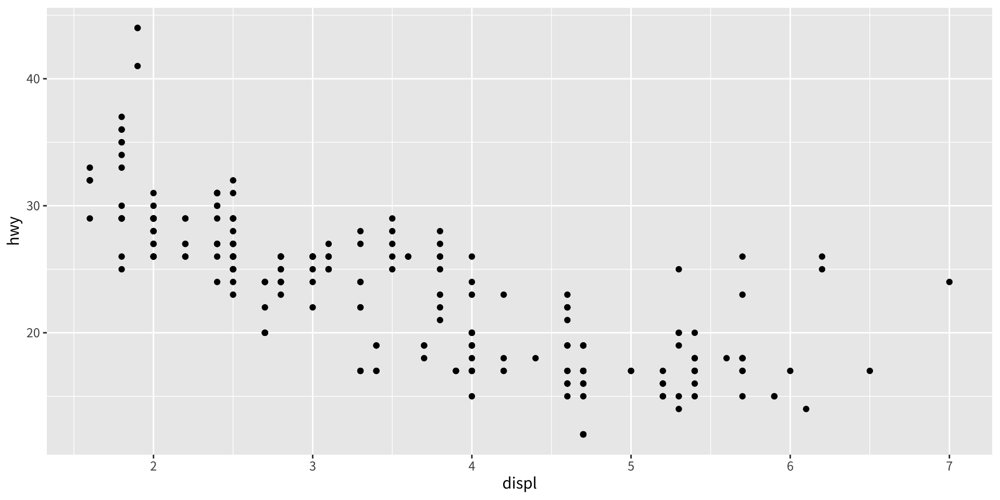
這會產生一張散佈圖，由以下要素定義：
資料：mpg。
美學映射：引擎大小映射到 x 位置，燃油經濟性映射到 y 位置。
圖層：點。
請留意這個函式呼叫的結構：資料與美學映射在 ggplot() 中提供，接著用 + 加上圖層。這是一個重要的模式，隨著你對 ggplot2 了解得更多，你將藉由加上更多種類的元件來建構越來越精巧的圖形。
幾乎每張圖都會把一個變數映射到 x、另一個到 y，因此每次都為這些美學命名很繁瑣，所以傳給 aes() 的前兩個未命名引數會被映射到 x 與 y。這代表以下程式碼與上面的例子完全相同：

我們全書都會沿用這種風格，所以別忘了 aes() 的前兩個引數是 x 與 y。請注意我們把每個指令各放在一行。我們建議你在自己的程式碼中也這樣做，這樣比較容易掃視一份繪圖規格、看清楚裡面究竟有什麼。在本章中，我們有時每張圖只用一行，因為這樣比較容易看出各種圖形變體之間的差異。
這張圖顯示出很強的相關性：隨著引擎變大，燃油經濟性變差。也有一些有趣的離群值：有些大引擎的車反而比平均值有更高的燃油經濟性。你覺得那是什麼樣的車？
練習
你會如何描述 cty 與 hwy 之間的關係？對於從那張圖得出結論，你有任何疑慮嗎？
ggplot(mpg, aes(model, manufacturer)) + geom_point()顯示了什麼？它有用嗎？你可以如何修改資料，讓它提供更多資訊？描述以下每張圖所用的資料、美學映射與圖層。你需要稍微猜測一下，因為你還沒看過所有的資料集與函式，但運用你的常識！看看你能不能在執行程式碼之前先預測圖會長什麼樣子。
ggplot(mpg, aes(cty, hwy)) + geom_point()ggplot(diamonds, aes(carat, price)) + geom_point()ggplot(economics, aes(date, unemploy)) + geom_line()ggplot(mpg, aes(cty)) + geom_histogram()
顏色、大小、形狀與其他美學屬性
顏色、大小、形狀與其他美學屬性
要為圖加入額外的變數，我們可以使用其他美學，例如顏色（colour）、形狀（shape）與大小（size）（註：本書全程使用英式拼法，但 ggplot2 也接受美式拼法）。它們的運作方式與 x、y 美學相同，都加進對 aes() 的呼叫中：
aes(displ, hwy, colour = class)aes(displ, hwy, shape = drv)aes(displ, hwy, size = cyl)
ggplot2 會透過尺度（scale）處理將資料（例如「f」、「r」、「4」）轉換成美學（例如「紅」、「黃」、「綠」）的細節。圖中每一個美學映射都對應一個尺度。尺度也負責建立指引（guide），即座標軸或圖例，讓你能夠判讀圖形，將美學的值轉換回資料的值。目前我們先沿用 ggplot2 提供的預設尺度。你將在第 11 章學到如何覆寫它們。
把 class 變數映射到顏色
為了更了解先前散佈圖中那些離群的變數，我們可以把 class 變數映射到顏色：
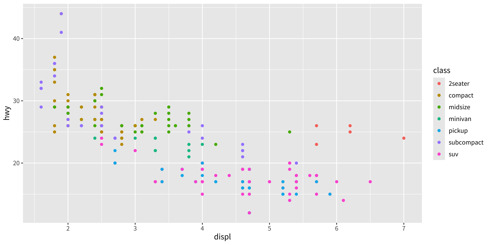
這會依各點的 class 給予獨特的顏色。圖例讓我們能從顏色讀回資料值，告訴我們那群相對於引擎大小有著異常高燃油經濟性的車是雙座車：引擎大、但車體輕的車。
如果你想把某個美學設為固定值、而不經過尺度轉換，請在個別圖層中、aes() 之外設定它。比較以下兩張圖：
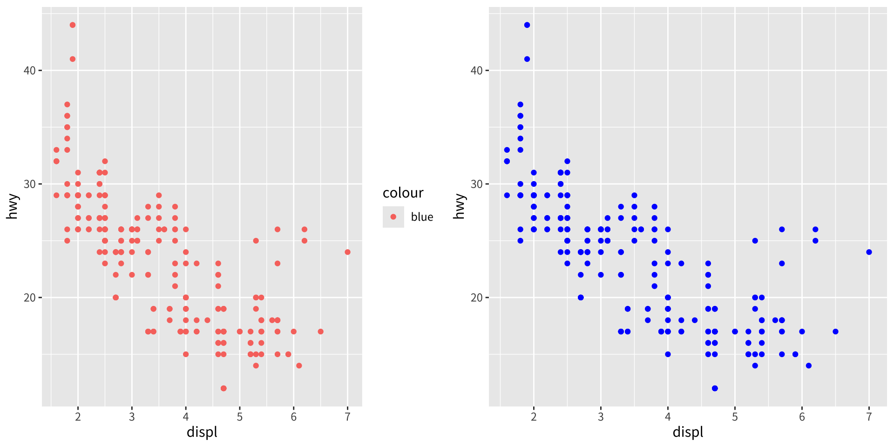
在第一張圖中，「blue」這個值被尺度轉換成了偏粉紅的顏色，並加上了圖例。在第二張圖中，點被賦予 R 的藍色。這是一個重要的技巧，你將在第 13.4.2 節學到更多。關於顏色與其他美學所需的值，請參見 vignette(“ggplot2-specs”)。
不同類型的美學屬性，適合搭配不同類型的變數。例如，顏色與形狀適合搭配類別變數，而大小適合搭配連續變數。資料量也會造成差異：如果資料很多，就很難區分不同的群組。另一種替代方案是使用分面，詳見下節。
在圖中使用美學時，通常「少即是多」。同時觀察顏色、形狀與大小之間的關係很困難，所以使用美學時要有所節制。與其試圖做出一張同時呈現一切、極度複雜的圖，不如看看你能否做出一系列簡單的圖來講述一個故事，引導讀者從無知走向理解。
練習
實驗 colour、shape 與 size 這些美學。當你把它們映射到連續值時會發生什麼？映射到類別值呢？當你在一張圖中使用多於一個美學時又會如何？
如果你把連續變數映射到 shape 會發生什麼？為什麼？如果你把 trans 映射到 shape 會發生什麼？為什麼？
驅動系統與燃油經濟性有何關係？驅動系統與引擎大小、class 又有何關係？
分面
分面
另一種在圖中顯示額外類別變數的技巧是分面（faceting）。分面藉由把資料切分成子集、並為每個子集顯示同一張圖，來建立圖形的表格。你將在第 16 章學到更多關於分面的內容，但它實在是太有用了，你現在就需要知道它。
分面有兩種類型：grid（網格）與 wrapped（環繞）。wrapped 最為實用，所以我們在這裡討論它，至於 grid 分面你可以稍後再學。要為一張圖做分面，你只要用 facet_wrap() 加上一個分面規格，它接受一個前面加上 ~ 的變數名稱。
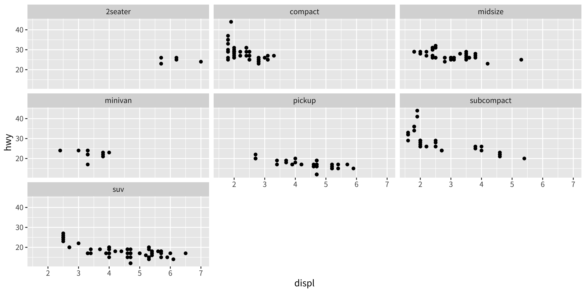
你可能會想，何時該用分面、何時該用美學。你將在第 16.5 節學到兩者各自的相對優缺點。
練習
如果你嘗試用像
hwy這種連續變數來分面會發生什麼？用cyl呢？關鍵差異是什麼？用分面來探討燃油經濟性、引擎大小與汽缸數之間的三向關係。依汽缸數分面，如何改變你對引擎大小與燃油經濟性之間關係的評估？
閱讀
facet_wrap()的說明文件。你可以用哪些引數來控制輸出中出現的列數與欄數？facet_wrap()的 scales 引數有什麼作用？你可能在什麼時候會用到它？
繪圖 geoms
繪圖 geoms
你或許會猜，把 geom_point() 換成不同的 geom 函式，就會得到不同類型的圖。猜得很好！在以下各節中，你將學到 ggplot2 所提供的一些其他重要 geoms。這不是一份詳盡的清單，但應已涵蓋最常用的圖形類型。你將在第 3 章與第 4 章學到更多。
geom_smooth()為資料配適一條平滑曲線，並顯示該平滑曲線及其標準誤。geom_boxplot()產生盒鬚圖，用來摘要一組點的分布。geom_histogram()與geom_freqpoly()顯示連續變數的分布。geom_bar()顯示類別變數的分布。geom_path()與geom_line()在資料點之間畫線。折線圖（line plot）被限制只能畫出由左至右的線，而路徑圖（path）則可往任何方向。折線通常用來探討事物隨時間如何變化。
為圖加上平滑曲線
如果你的散佈圖雜訊很多，可能很難看出主要的型態。在這種情況下，用 geom_smooth() 為圖加上一條平滑線會很有用：
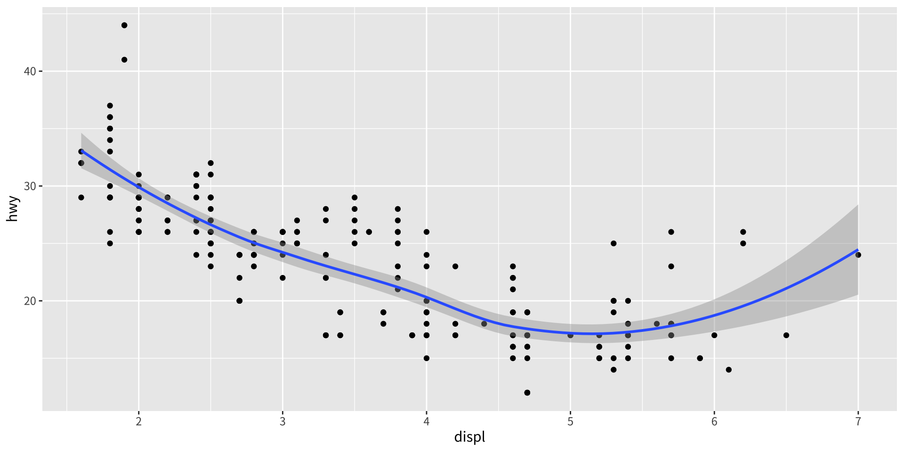
這會在散佈圖上覆蓋一條平滑曲線，並以灰色顯示逐點信賴區間（point-wise confidence intervals）形式的不確定性評估。如果你對信賴區間不感興趣，可以用 geom_smooth(se = FALSE) 把它關掉。
geom_smooth() 的一個重要引數是 method，它讓你選擇要用哪種模型來配適平滑曲線：
局部估計散佈圖平滑（loess）
method = "loess"是小 n 時的預設值，使用平滑的局部迴歸（如?loess所述）。線條的彎曲程度由span參數控制，其範圍從 0（極度彎曲）到 1（不太彎曲）。
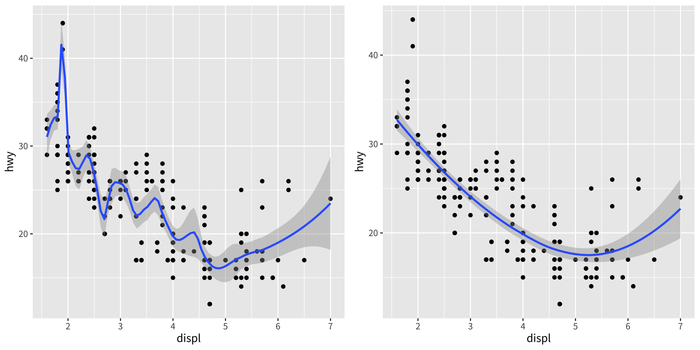
Loess 對大型資料集表現不佳（它在記憶體上是 \(O(n^2)\)），所以當 \(n\) 大於 \(1,000\) 時會改用另一種平滑演算法。
廣義加性模型（gam）
method = "gam"配適由mgcv套件提供的廣義加性模型。你需要先載入mgcv，再使用像 formula =y ~ s(x)或y ~ s(x, bs = "cs")（用於大型資料）這樣的公式。當點數超過 1,000 時，ggplot2用的就是這個。
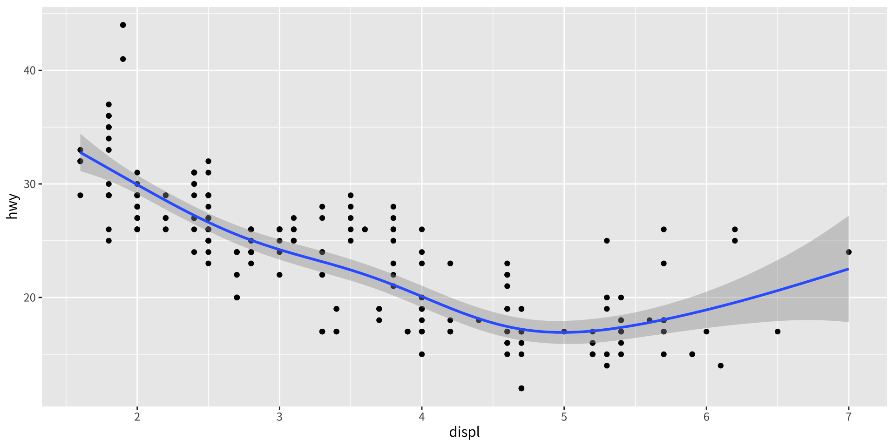
線性模型（lm）
method = "lm"配適線性模型，給出最佳配適線。
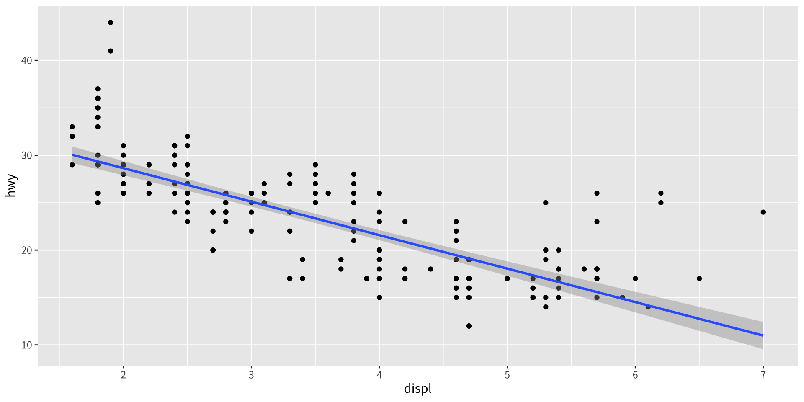
盒鬚圖與抖動點
當一組資料同時包含一個類別變數與一個或多個連續變數時，你大概會想知道連續變數的值如何隨類別變數的各個水準而變化。假設我們想看看在驅動系統相同的車當中，燃油經濟性如何變化。我們可能會從這樣的散佈圖開始：
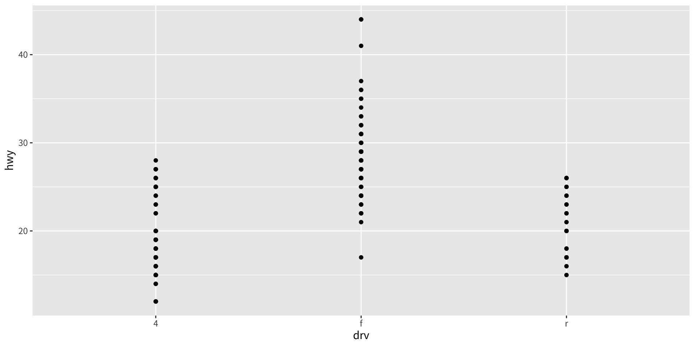
由於 drv 與 hwy 的相異值都很少，因此有大量的重疊繪製（overplotting）。許多點被畫在同一個位置，使得分布難以辨認。有三種有用的技巧能幫助緩解這個問題：
抖動（jittering），
geom_jitter()，為資料加上少許隨機雜訊，有助於避免重疊繪製。盒鬚圖，
geom_boxplot()，用少數幾個摘要統計量來摘要分布的形狀。小提琴圖，
geom_violin()，呈現分布「密度」的精簡表示，凸顯出較多點所在的區域。
下面加以示範：
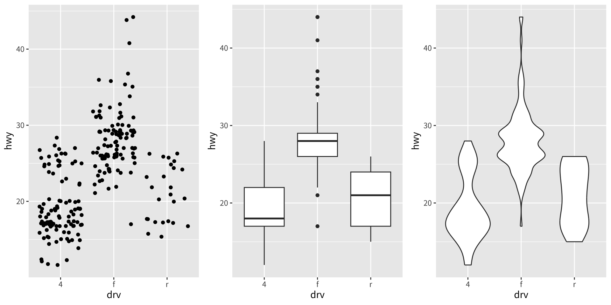
每種方法各有優缺點。盒鬚圖只用五個數字就摘要了分布的主體，而抖動圖顯示每一個點、但只適用於相對小型的資料集。小提琴圖提供最豐富的呈現，但仰賴密度估計的計算，而密度估計可能不易詮釋。
對於抖動點，geom_jitter() 提供與 geom_point() 相同的美學控制：大小、顏色與形狀。對於 geom_boxplot() 與 geom_violin()，你可以控制外框顏色或內部填色。
直方圖與次數多邊形
直方圖與次數多邊形（frequency polygon）的運作方式相同：它們把資料分組（bin），然後計算每一組內的觀測值數目。唯一的差別在於呈現方式：直方圖用長條，次數多邊形用線。
你可以用 binwidth 引數控制組距（if 你不想要等距的組，可以用 breaks 引數）。實驗組距是非常重要的。預設只是把你的資料切成 30 組，這不太可能是最佳選擇。你應該總是嘗試多種組距，而且你可能會發現需要用多個組距才能講出資料的完整故事。
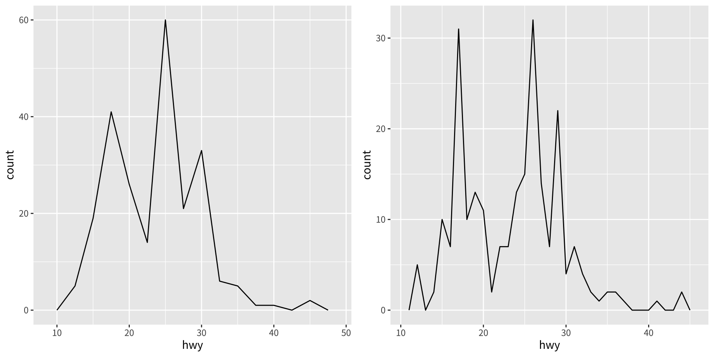
密度圖
次數多邊形的一個替代選擇是密度圖（density plot），geom_density()。如果你使用密度圖需要稍加小心：相較於次數多邊形，它們較難詮釋，因為底層的計算更為複雜。它們也做了一些並非對所有資料都成立的假設，亦即底層分布是連續、無界且平滑的。
不同子群組的分布
要比較不同子群組的分布，你可以把一個類別變數映射到 fill（用於 geom_histogram()）或 colour（用於 geom_freqpoly()）。用次數多邊形來比較分布比較容易，因為背後的知覺任務較簡單。你也可以使用分面：這會讓比較稍微困難一些，但比較容易看清每一組的分布。
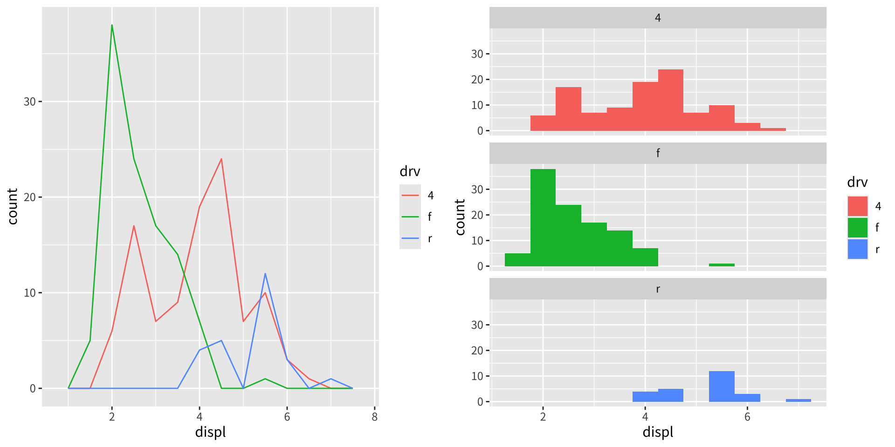
長條圖
直方圖的離散對應物是長條圖，geom_bar()。它很容易使用：
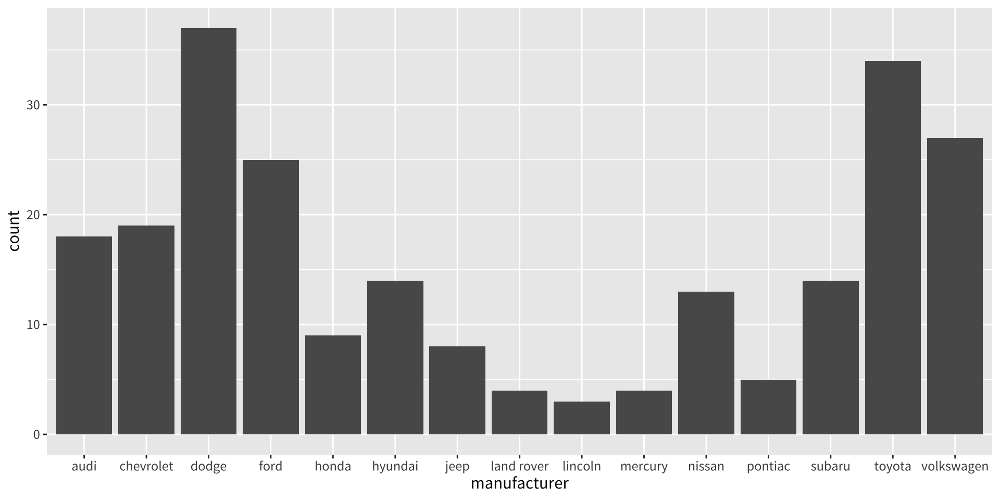
（你將在第 17.4.2 節學到如何修正標籤。）
長條圖可能令人困惑，因為有兩種頗為不同的圖都常被稱作長條圖。上面這種形式預期你擁有未經摘要的資料，每筆觀測值都對各長條的高度貢獻一個單位。另一種形式的長條圖則用於已預先摘要的資料。例如，你可能有三種藥物及其平均療效：
要顯示這類資料，你需要告訴 geom_bar() 不要執行預設的、會把資料分組並計數的 stat。不過，我們認為用 geom_point() 甚至更好，因為點比長條占用更少空間，而且不要求 y 軸包含 0。
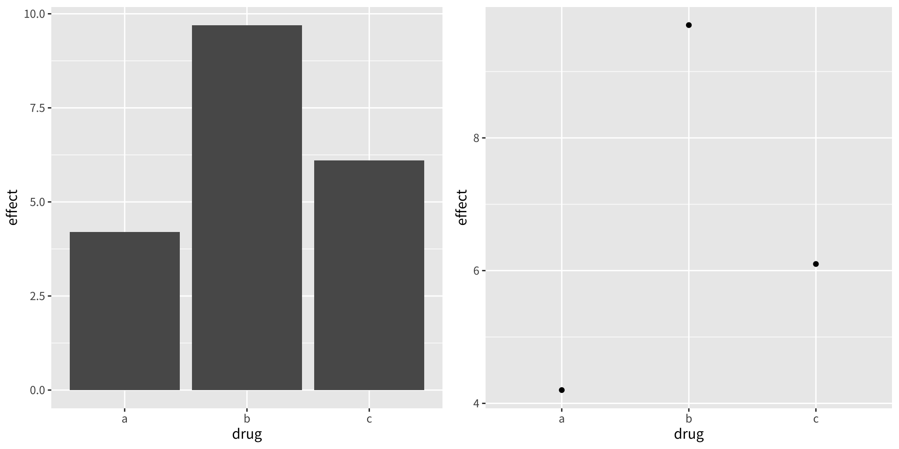
折線圖與路徑圖呈現時間序列
折線圖與路徑圖通常用於時間序列資料。折線圖由左至右把點連起來，而路徑圖則依資料集中點出現的順序把它們連起來（換言之，折線圖就是把資料依 x 值排序後的路徑圖）。折線圖通常把時間放在 x 軸上，顯示單一變數如何隨時間變化。路徑圖則顯示兩個變數如何隨時間同時變化，時間被編碼在觀測值連接的方式中。
時間序列
由於 mpg 資料集中的 year 變數只有兩個值，我們將用 economics 資料集來展示一些時間序列圖，該資料集包含過去 40 年間量測的美國經濟資料。下圖顯示兩張失業隨時間變化的圖，皆以 geom_line() 產生。第一張顯示失業率，第二張顯示失業週數中位數。我們已經能看出這兩個變數之間的一些差異，特別是在最後一個高峰處，失業百分比比先前幾個高峰來得低，但失業的長度卻很高。
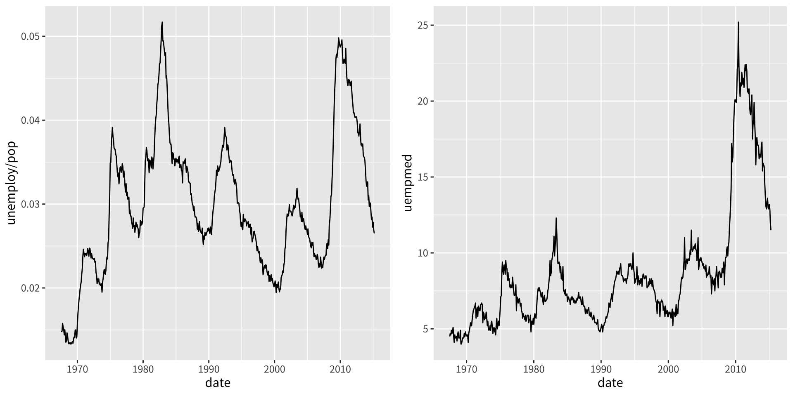
路徑圖
為了更詳細地檢視這個關係，我們會想把兩條時間序列畫在同一張圖上。我們可以畫一張失業率對失業長度的散佈圖，但這樣就再也看不到隨時間的演變了。解法是用線段把時間上相鄰的點連起來，形成一張路徑圖。
下面我們畫出失業率對失業長度，並用路徑把個別觀測值連起來。由於有許多線條交叉，在第一張圖中不容易看出時間流動的方向。在第二張圖中，我們為點上色，讓時間方向更容易看清。
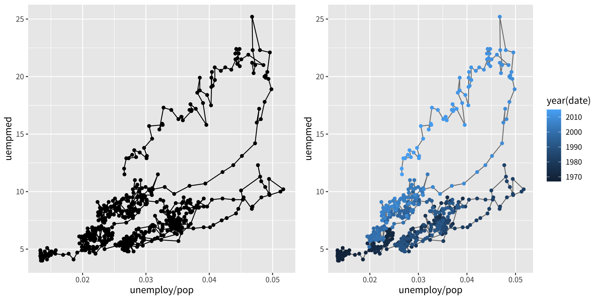
我們可以看出失業率與失業長度高度相關，但近年來相較於失業率，失業的長度一直在增加。
對於縱貫性（longitudinal）資料，你常會想在每張圖中顯示多條時間序列，每條序列代表一個個體。要做到這點，你需要把 group 美學映射到一個編碼各觀測值所屬群組的變數。這在第 4 章中有更深入的說明。
練習
ggplot(mpg, aes(cty, hwy)) + geom_point()所建立的圖有什麼問題？上面描述的 geoms 中，哪一個最能有效補救這個問題？ggplot(mpg, aes(class, hwy)) + geom_boxplot()的一個挑戰是class的排序是按字母順序，這不太有用。你要如何改變因子的水準，讓它提供更多資訊？
- 與其手動重新排序因子，你可以根據資料自動完成：
ggplot(mpg, aes(reorder(class, hwy), hwy)) + geom_boxplot()。reorder()有什麼作用？閱讀說明文件。
- 探討
diamonds資料集中 carat 變數的分布。哪個組距能揭示最有趣的型態？
探討
diamonds資料中 price 變數的分布。這個分布如何隨 cut 而變化？你現在（至少）知道三種比較子群組分布的方法：
geom_violin()、geom_freqpoly()加上 colour 美學，或是geom_histogram()加上分面。每種方法的優缺點各是什麼？你還能嘗試哪些其他方法？閱讀
geom_bar()的說明文件。weight美學有什麼作用？運用本章已討論過的技巧，想出三種把二維類別分布視覺化的方法。試著用它們來把
model與manufacturer、trans與class，以及cyl與trans的分布視覺化。
修改座標軸
修改座標軸
你將在後續章節學到所有可用的選項，但有兩組有用的輔助函式能讓你進行最常見的修改。xlab() 與 ylab() 修改 x 軸與 y 軸的標籤：
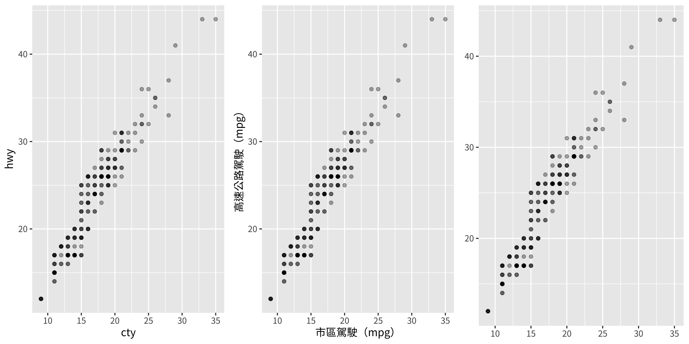
xlim() 與 ylim() 修改座標軸的範圍：
ggplot(mpg, aes(drv, hwy)) +
geom_jitter(width = 0.25)
ggplot(mpg, aes(drv, hwy)) +
geom_jitter(width = 0.25) +
xlim("f", "r") +
ylim(20, 30)
#> Warning: Removed 138 rows containing missing values or values outside the scale range
#> (`geom_point()`).
# 對於連續尺度，用 NA 只設定其中一個範圍界限
ggplot(mpg, aes(drv, hwy)) +
geom_jitter(width = 0.25, na.rm = TRUE) +
ylim(NA, 30)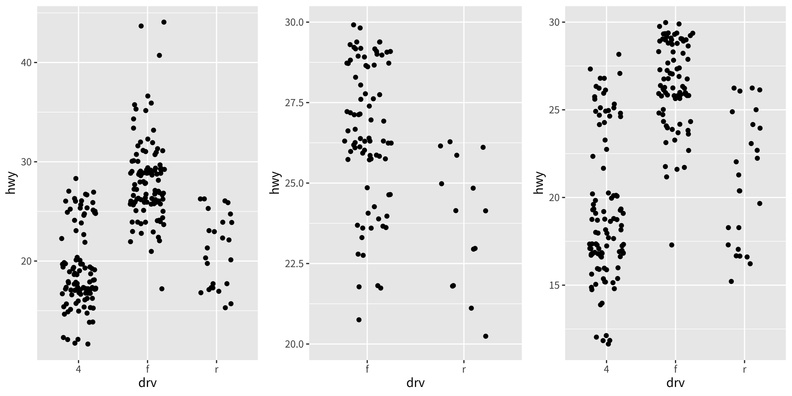
改變座標軸範圍會把範圍外的值設為 NA。你可以用 na.rm = TRUE 抑制相關的警告，但要小心。如果你的圖計算了摘要統計量（例如樣本平均），這個轉成 NA 的動作會在計算摘要統計量之前發生，在某些情況下可能導致不理想的結果。
輸出
輸出
大多數時候你會建立一個圖形物件並立即把它畫出來，但你也可以把圖存到一個變數中並加以操作：
一旦你有了圖形物件，你可以對它做幾件事：
在螢幕上呈現
- 用
print()把它呈現在螢幕上。在互動式執行時這會自動發生，但在迴圈或函式內部，你需要自己print()它。
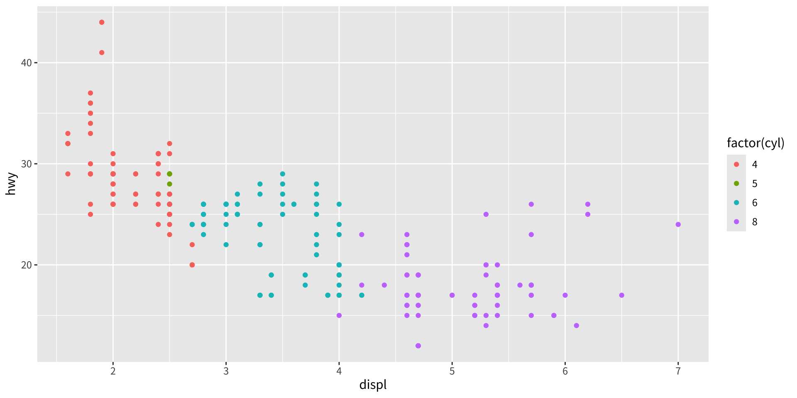
存到磁碟
- 用
ggsave()把它存到磁碟，詳見第 17.5 節。
簡要描述
- 用
summary()簡要描述它的結構。
data: manufacturer, model, displ, year, cyl, trans, drv, cty, hwy, fl,
class [234x11]
mapping: x = ~displ, y = ~hwy, colour = ~factor(cyl)
faceting: <empty>
-----------------------------------
geom_point: na.rm = FALSE
stat_identity: na.rm = FALSE
position_identity 你將在第 18 章學到更多關於如何操作這些物件的內容。
版權聲明
版權聲明。 本教材改編自 ggplot2: Elegant Graphics for Data Analysis (3e)。所有權利均由原作者與出版者保留。
僅供非商業用途。 本教材嚴格限定用於教育目的，不得用於商業獲利。
適當標註出處。 任何對本教材的重製、散布或使用，都必須適當標註原始出處。

ggplot2: Elegant Graphics for Data Analysis